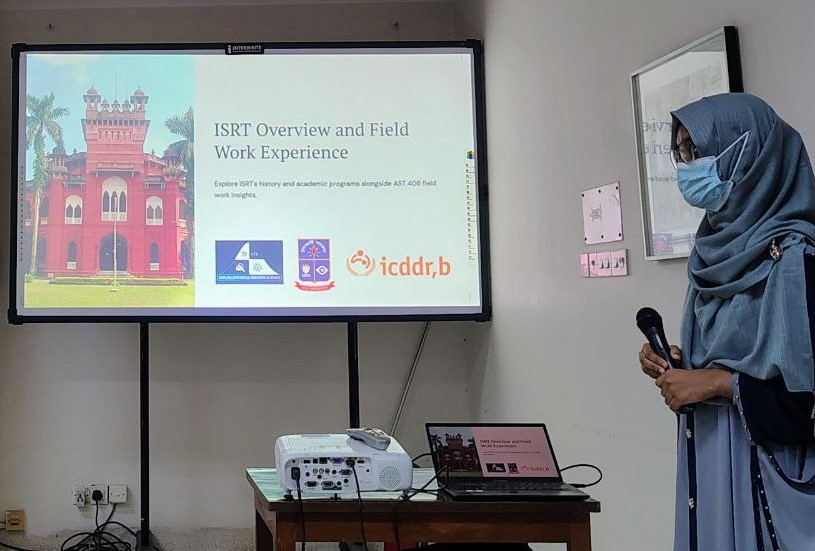

ISRT Students Visit icddr,b Matlab HDSS Site for Hands-on Training
Acknowledgments
We, students in the fourth year of the Institute of Statistical Research and Training (ISRT), batch 27, express our deepest gratitude to the Almighty for giving us the opportunity to visit the Health and Demographic Surveillance System (HDSS) at Matlab in Chandpur and safely return from the site.
We also express gratitude to our respected course teacher, Professor Dr. Md. Israt Rayhan, as well as lecturers Tasnim Ara, Priom Saha, and Tarikul Islam from ISRT, University of Dhaka, who accompanied us on this trip. In addition, we express our heartfelt thanks to the entire team at Matlab HDSS for their warm hospitality and for generously hosting our visit.
The members of team RED: Md. Fahim Ashab Abir; Md. Monowar Hossain; Md. Mojahidul Islam; Md. Nayeem Chowdhury; Md. Sajin Sattar Avi; Md. Emon Sherkar; Ridwanul Islam Ayat; Nabil Faisal; Sahib Al Kawsar
Arrival at the Site
With transportation arranged by the Matlab Health and Demographic Surveillance System (HDSS) under the International Centre for Diarrhoeal Disease Research, Bangladesh (icddr,b), we traveled to the central facility of Matlab HDSS, located in a sub-district of Chandpur. We were accompanied by our four faculty members. The date was 29th of April 2025. It was a clear, sunny day as we disembarked from the buses and proceeded to the Internal Training Center (ITC) of Matlab, where we took a short break to freshen up. A breakfast of puri, chhana, and tea was served, after which we gathered in the ITC auditorium for the formal commencement of the visit. Seated comfortably, we were warmly welcomed by Dr. Md Alfazal Khan, Head of icddr,b Matlab HDSS, and Dr. Jamal Uddin Ahmed, Project Research Manager at icddr,b.
Opening Presentation
According to Mr. Alfazal, Matlab hospital started as a health center in 1963 and the HDSS was effectively launched in 1966. The specialty of Matlab is its longevity and consistent collection of health and demographic data. Primary donors include the Government of Bangladesh, Canada, Sweden, and the UK.
Mr. Alfazal highlighted remarkable feats, such as the cholera vaccine trials. Matlab’s research proved that injectable vaccines were ineffective while oral ones were, leading the WHO to update global recommendations. They also pioneered the Maternal Child Health and Family Planning (MCHFP) model, which the Government of Bangladesh later implemented nationwide to reduce mortality and fertility rates.

The Matlab Hospital is famous for treating water-borne diseases, treating nearly 60,000 patients yearly. They have published over 8,000 papers since 1963. Current research includes the effectiveness of probiotics for pregnant women and metal-induced neurotoxicity in rural children.
Visiting the Field
Following the presentation, we visited a village named Doshpara (village code v059). Data collection in Matlab has been ongoing since 1966 using Galaxy Tabs. Matlab encompasses ~250,000 residents across 142 villages.
Each individual is assigned a unique RID (Respondent ID) which remains unchanged throughout life. Enumerators collect demographic data (birth, death, migration), health data (contraceptives, vaccinations), and GIS data. Our group observed CHRW Jakia Parvin demonstrating how birth and death events are documented live on digital tablets.
Our Presentation
Upon our return to the ITC, a lunch of rice, vegetables, fish, and mutton curry was served. Afterward, our classmates Humayara Mahjebin Turin and Ayesha Siddika Juthi presented an overview of ISRT and our course, AST 406: Research Methodology and Social Statistics.


We discussed our specific research groups, focusing on topics like gender-based wage inequality, student health, and the impact of living arrangements on academic achievement.
The Barge
The ‘Barge’ is a two-storied vessel with a rich history. Originally a British floating jail, it was converted into a floating hospital in 1964. It played a central role in the development of Oral Rehydration Therapy (ORT).
Legendary scientists like David Nalin and John Rohde conducted groundbreaking work here. Even after its medical role ended in 1990, it remains a key fixture in the community’s memory, and icddr,b is considering turning it into a museum.
The Matlab Hospital & Conclusion
The hospital offers specialized diarrheal disease management and maternal health services supported by donors like the Gates Foundation. Witnessing the care provided under challenging conditions was a powerful reminder of the impact of dedicated research.

As the tour ended, we reflected on the decades of dedication behind icddr,b’s work. Integrating academic knowledge with practical application is a lesson we will carry forward in our research journeys.